接下来，我们就把初中数学中所涉及的数字类型，认真细致地梳理一遍．
在小学阶段，我们接触的最基本的数字是1、2、3、4这些自然数，自然数都是从1开始，往后一个个增加，慢慢加出来的．有了加法就得有减法：两个小的自然数一加，可以得到一个大的自然数；反过来，大数减小数，得到一个小的自然数．但是，如果小数减大数呢？结果就超出了自然数的范围，得到一个负数，有了正负数就必须得有0了．我们把这个自然数、负数和0整到一起，统称整数．
而且我们还知道，乘法是高效的加法，两个整数相乘，相当于几个整数连着相加，整数相加的结果仍然是一个整数．所以依靠乘法是产生不了新的数字类型的．与乘法相反，当除法出现时，新的数字类型又产生了．两数相乘时，乘积的增长速度非常快，比如3×2＝6，3×3＝9，那6跟9中间的数字除以3怎么办呢？结果肯定没法整除，这样一来就产生了分数．通过上述分析我们不难发现，无论是减法还是除法，只要有逆运算，就会产生新的数字类型．减法产生了负数，除法产生了分数，我们把整数和分数合在一起，统称为有理数．那么整数和分数为什么叫作有理数呢？其实只不过是一种翻译错误，“有理数”这个词在希腊语中是“
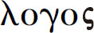
”，它的含义本来是可比数或可分的数，但是欧洲的数学教材先传到日本，日语把可比数翻译成了有理数，之后我们就将错就错地一直这么称呼．既然有了有理数，那就得有无理数．（如图11－1）无理数就是我们今天要讨论的无限不循环小数．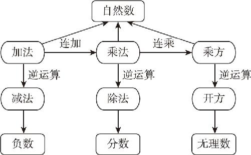
图11－1
哪个数的平方是2，哪个数字的平方是3呢？无论是整数还是分数中都没有这样的数字，结果就只能用
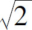
、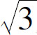
来表示． 是无理数， 也是无理数，那么是不是所有的无理数都是开方开不出来的数字呢？不是，只要是无限不循环小数，都被称作无理数！比如，我们熟知的圆周率π就是一个无限不循环小数，因此π也是一个无理数．有理数和无理数统称实数．实数，按符号分，可以分为正数、负数和0；按算法分，可以分为整数、分数和无理数．这就是初中阶段全部的数字类型．我们学过的有限小数和无限循环小数呢？这些全部都可以化为分数．接下来我们就介绍一下分数和小数的转换方法．
首先，有限小数转换为分数是很容易理解的，比如0.3就是
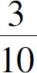
；2.54就是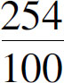
．不管小数位数有多长，我只要在1后边多加上几个0做分母就可以了．那么循环小数呢？所有的循环小数都能变成分数．在循环小数变分数的时候，只要用循环的几个数字当作分子，在分母上补充对应的几个9就可以了．比如0.111…，如果1是循环的，咱就可以用1作分子，用1个9作分母，结果就是
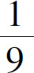
．同样，如果是0.121212…，其中的12不断地循环，那么变成分数后，分子就是12，因为分子是两位数，所以分母就是两个9，也就是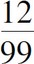
．那如果是0.423423423…呢？当然就是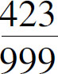
了．那么，如果小数位不是全部循环的，只有部分循环，怎么办？比如，0.32454545…，后边的45是反复循环的，前边的32并不循环，这种情况下，只要把99的后边补上几位0，再用循环节45减去循环节之前的小数位就可以了，比方这个0.32454545…，前两位不循环、后两位循环，那么分子前两位是32，后两位是45－32＝13，即分子是3213，分母就是9900．几个循环数字就几个9，几个不循环数字就是几个0．
但是世界上有那么多分数，怎么可能分母都是带9的呢，那些不带9的怎么办？比如
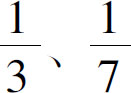
等，其实这些数字全部都能化成分母是几个9的分数，比如：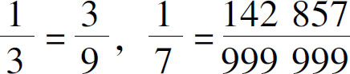
．那么，为什么所有分数都能化成几个9几个0的这种形式呢？这个问题有一点复杂，在这里就不给出完整的证明过程，只给出一个解释性的说明．任何一个分数都可以拆成两部分的乘积，比如：
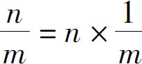
．关键在于，后面的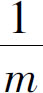
，一定是一个循环小数，当1除以某个整数的时候，随着除法不断深入，我们会在1的后边反复地补充数字0；随着除法的进行，商中的数字会一个个顺次浮现，被减数则会一点点往下减．那么什么时候商中的数字出现循环了呢？等余数只剩1的时候，因为剩下的余数1，再做除法的时候后边仍然还是要补充0，所以整个除法算式就开始进入了循环模式．刚才我们在1后边补充了很多0，所以得到的循环节乘以这个除数，结果一定是很多个9的组合．那么，这里边就会有一个问题了，0.999…循环等于几，按照这个规律，在0.999…中，循环节是9，所以分子应该是9，它的循环位数是一位，因此分母也应该只有一个9，这样一来它就应该等于
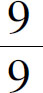
，即等于1才对，但是，无论我们怎么看，都觉得它的结果是小于1的．那么它究竟等于多少呢？接下来让我们分析一下．我们假设0.999…＝x ，等式左右两边乘以10，得到9.999…＝10x ，在这个等式两侧分别减去第一个等式，得到9.999…－0.999…＝10x －x ，合并化简得9＝9x ，两侧同时除以9，得到1＝x ，又因为0.999…＝x ，所以0.999…＝1．
没错，0.999…确实就等于1．相关的证明方法还有很多，但是无论怎么证明，对于大多数人来说，还是过不了心里那道坎儿．如果你实在不理解，那我们就打个比方，我们知道1用百分数来表示，就是100％，而任何人都不是100％完美的，但是你只要朝着100％的方向不断努力，我们就可以认为你已经是100％完美了．